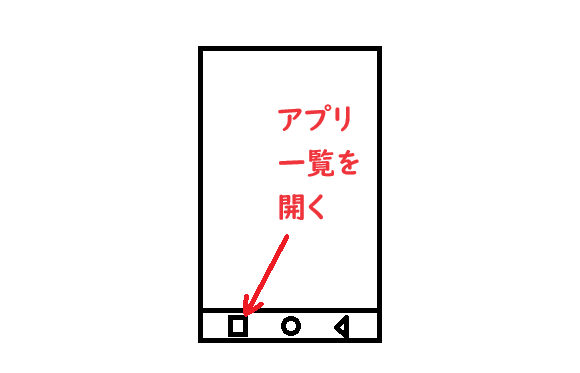

今開いているアプリ一覧を表示しよう 次に今開いている アプリ一覧を表示します。 アプリを切り替える場合に使用します。 スマホの画面の一番下の □をタッチして アプリ一覧を開き このチュートリアルサイトの ブラウザを再度開いて下さい。 一番下に□が無い場合は スマホの一番下から 上方向にスワイプする 必要があります。 アプリ一覧画面では スワイプでアプリを探して タッチでアプリを選択して アプリを開きます。 
<< 前へ
次へ >>